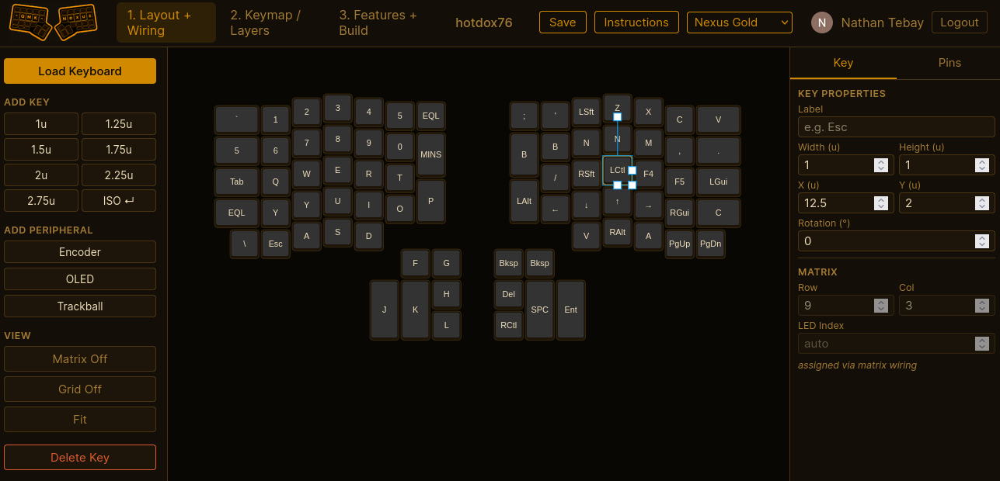
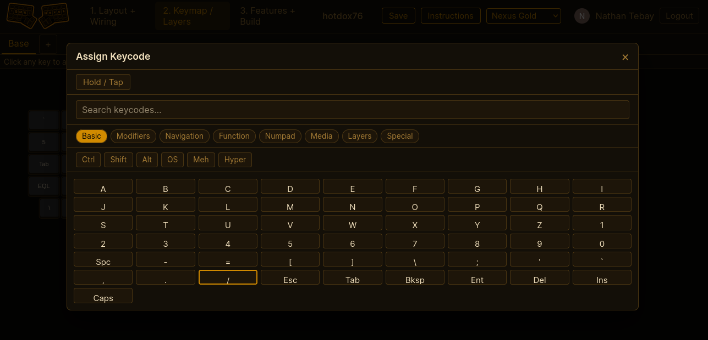
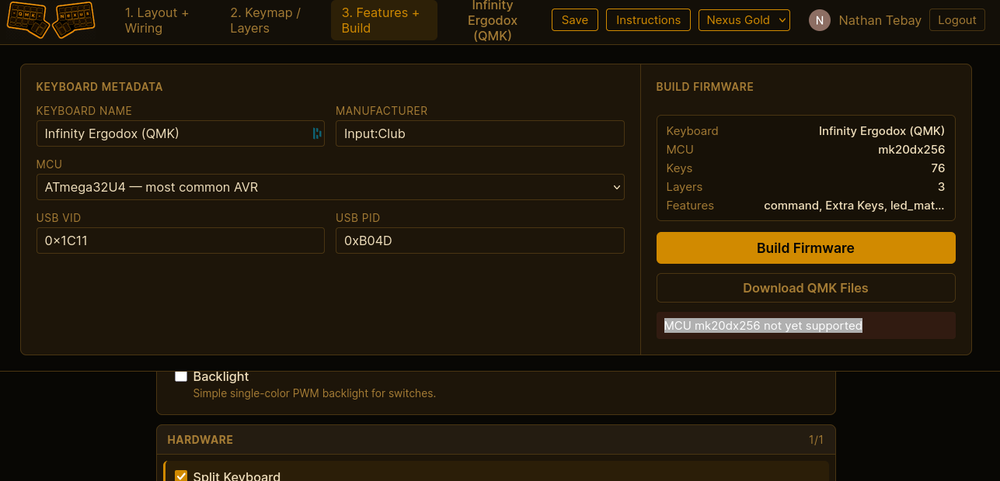

QMK Nexus
A visual firmware builder for custom QMK keyboards.
QMK Nexus brings keyboard layout, matrix wiring, keymaps, hardware features, and firmware builds into one browser-based workflow.
What it solves
While building my own handwired keyboard, I found that setting up the layout, wiring and keymaps was spread across three different sites, two of which have not been supported in close to a decade. Many keyboard features, like encoders, OLED screens and joysticks, still require coding and special compiler steps to implement. QMK Nexus brings this all into a single place without relying on existing configurations for your keyboard.



Who this is for
- People building hand-wired or custom QMK keyboards
- People adapting existing QMK-supported keyboards
- Builders who want visual tools instead of editing config files by hand
- Developers interested in firmware tooling, visual editors, and build pipelines
What it does
QMK Nexus is a browser-based firmware builder for custom QMK keyboards. It helps users design layouts, wire matrix rows and columns, assign keymaps, configure hardware features, and build firmware from one visual workflow.
The workflow follows the way builders think about a keyboard: layout and wiring first, keymap and layers next, features and firmware build last. The backend stores user keyboards, checks build readiness, generates QMK-compatible source files, and runs builds in an isolated builder.
Workflow covered
- Layout and wiring - place keys, set sizes and rotations, assign matrix rows and columns, and model peripherals.
- Keymap and layers - edit layers, encoders, combos, tap dance, mouse keys, and QMK keycodes.
- Features and build - choose MCU, bootloader, OLED, encoder, trackball, RGB, split options, then generate source and download firmware.
Tech Stack
Why it matters
Building my own keyboard, I was having trouble putting all the pieces together to build my firmware. I started with the Keyboard Layout Editor to create the base keyboard definition, then imported the JSON into Keyboard Firmware Builder to build the wiring diagram and pin definitions, and finally imported its output into QMK Configurator to define keys and functions. This was not a clean process. Several files needed to be updated to newer formats along the way, and my confidence that the final firmware would work as expected was low.
The QMK Nexus site solves this by bringing those three steps into a single workflow and adding additional functionality that would otherwise require manual coding. This was a project that had been in the back of my head for a while; when I started learning to use AI for coding it was a perfect one to learn on.
Challenges
- Supporting existing QMK keyboards was a core requirement. They do not all follow a specific format: some are defined in C, some in JSON, some a mix of both. Many include external libraries to support joysticks or OLED screens, and not always in the same way. Getting all 3000+ of them to load, allow modification and compile was a slow, repetitive process.
- Keeping AWS costs down drove the deployment design. Currently the frontend and backend run on Lambda, with builds in ECS Fargate on demand. This runs within free tier limits unless usage dramatically increases; storage for the images is the only cost, at around $0.40 per month.
- Building a layout editor that supports key placement, selection, resizing, rotation, matrix assignment, and peripheral placement while staying predictable.
- Running firmware builds safely from a web request by isolating QMK compilation inside a short-lived builder container or build proxy.
Current scope
Works now
- Google sign-in and saved keyboards
- Visual layout editor
- Matrix wiring canvas
- Keymap editor with layers
- Firmware build log and download
- Import from QMK keyboard index
Supported features
- Encoders
- OLEDs
- Trackballs / pointing devices
- RGB Matrix / RGB Light
- Split keyboards
- Tap Dance
- Combos
- Mouse Keys
- NKRO
Still improving
- Build target validation
- Keyboard preset coverage
- Documentation and onboarding
Related work
What to do next
Try the app, review the source, or open an issue if you are building a keyboard and want to report a workflow gap. If you are evaluating the project technically, the page above shows the product flow, data modeling, firmware generation, and build pipeline behind it.